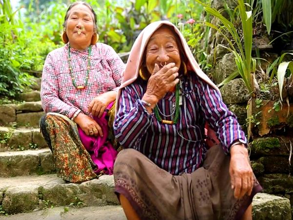
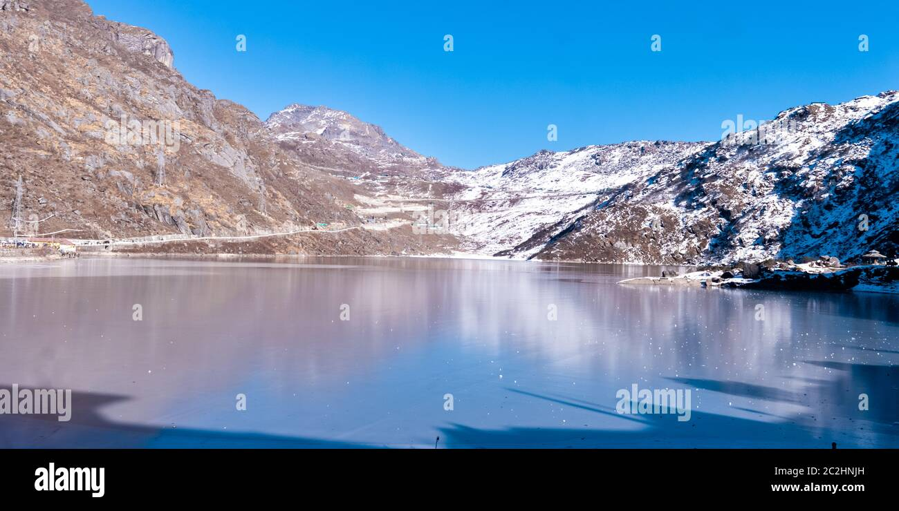
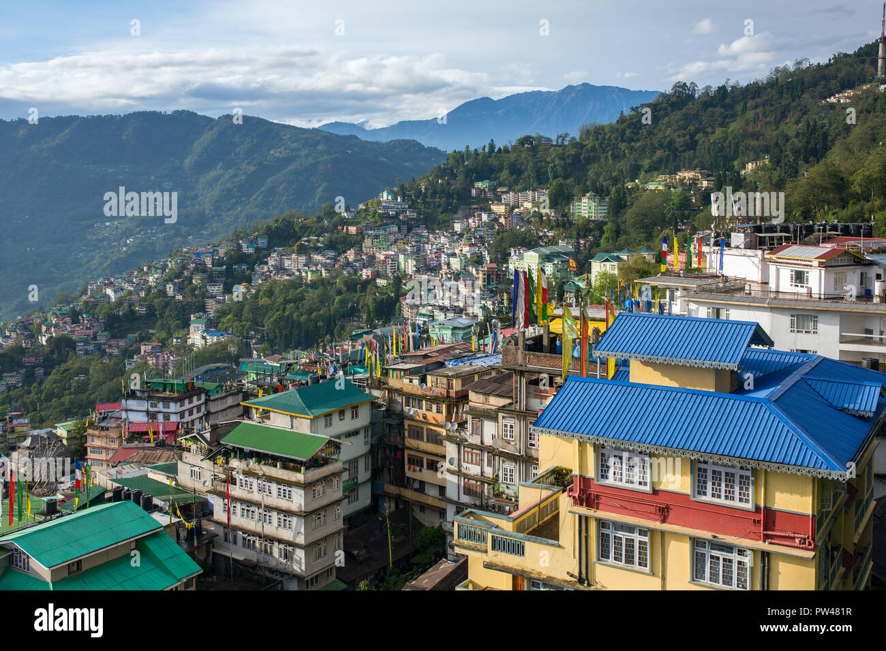

Sikkim: Culture & Practical Guide
Dive deep into the heart of Sikkim with comprehensive guides covering local insights, travel planning and vibrant traditions.
Empowering Local Communities
Local Guide Program
Join certified local guide programs to help visitors and preserve cultural heritage.
Learn MoreTourism Job Opportunities
Find jobs in hospitality, trekking, guiding and local handicraft promotion.
Explore JobsYour Journey to Sikkim: A Roadmap
Planning Your Route & Entry
Routes to Sikkim include flight to Bagdogra, then road to Gangtok; or rail to New Jalpaiguri and road. Permits required for some areas.
Best Time to Visit & Duration
October–December and March–May are popular. For rhododendron blooms, plan for April–May.
Accommodation & Local Transport
Options range from homestays to luxury hotels; shared taxis and buses are common for inter-town travel.
Sikkim in Motion: Visual Journeys
Sikkim in Numbers & Smarter Travel
Key Statistics
- Population: ~6 Lakh
- Primary Sectors: Agriculture, Tourism, Hydropower
- Per capita incomes vary across districts
Time Management Tips
- Visit popular sites early morning to avoid crowds
- Book permits/tickets online where available
Sikkim's Vibrant Cultural Fabric & Iconic Destinations

Sikkim's culture is shaped by Lepchas, Bhutias and Nepalis. Traditional dances, festivals and spiritual practices play a central role in daily life.

Gangtok
